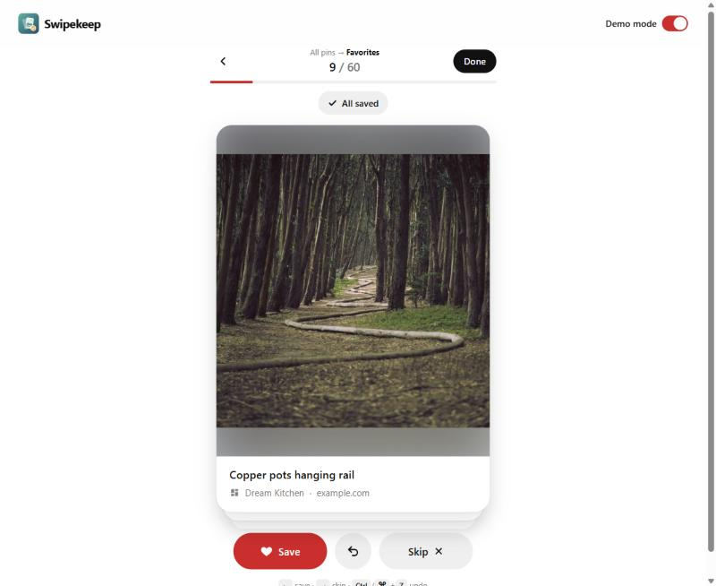

Swipekeep
A personal tool for sorting my own Pinterest pins. It shows one pin at a time: swipe left to keep it on a board I choose, swipe right to skip it.

The sorting screen, shown here with sample data.
What it does
Choose which of my boards to sort from, and a board to save keepers into (or create a new one).
Swipe left (or press ←) to save a copy of the pin. Swipe right (or press →) to skip. Undo any mistake.
See everything I saved in a gallery. Progress is remembered, so I can stop and pick up later.
Who it's for
Swipekeep is a personal, non-commercial project. It runs on my own computer and is used only by me, with my own Pinterest account. It is not a public service, it has no other users, and it is not a social media site.
How it uses the Pinterest API
Swipekeep signs in with Pinterest's official OAuth and only works with the signed-in account's own data.
| Permission | Used for |
|---|---|
user_accounts:read | Showing which account is connected |
boards:read | Listing my boards to sort from and save into |
pins:read | Showing my pins one at a time |
pins:write | Saving a copy of a chosen pin to my destination board |
boards:write | Creating a new destination board, only when I ask |
What it never does
Swipekeep never deletes, moves or edits existing pins or boards, and never accesses other people's data. Nothing is shared, sold or sent anywhere except Pinterest's own API. Details are in the privacy policy.
Swipekeep is an independent personal project. It is not affiliated with, endorsed by, or sponsored by Pinterest.